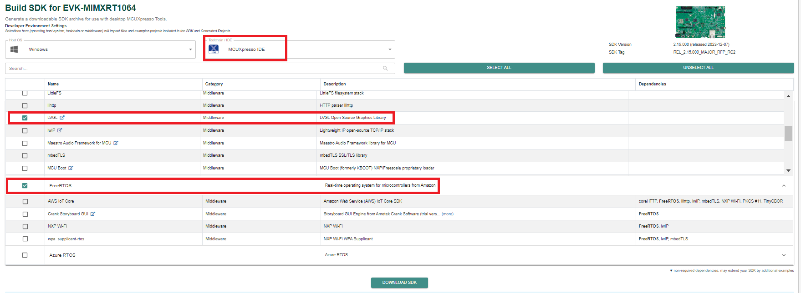
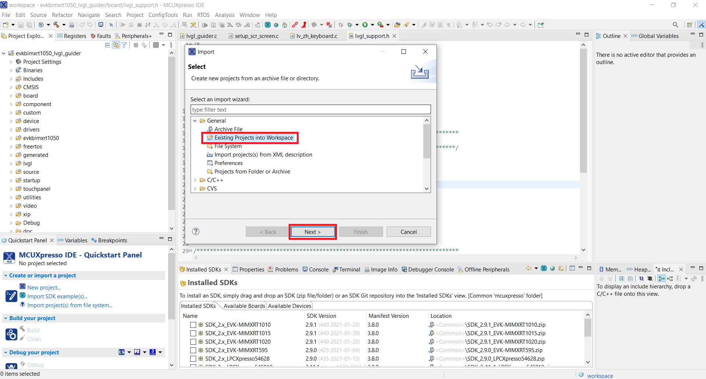

- Open the link https://mcuxpresso.nxp.com/en/select.
- Select the development board. For example, EVK-MIMXRT1064.
- Click the Build MCUXpresso SDK button.
- Select the two middleware LVGL and FreeRTOS from the Build SDK for <target> page.
- Make sure to select the MCUXpresso (toolchain).
- Click the Download SDK button.
Figure: Downloading SDK 
- Import the downloaded SDK into the IDE.
- Click File > Import > General.
Figure: Importing project 
- Select the GUI Guider project MCUXpresso path.
Figure: Selecting the GUI Guider project path